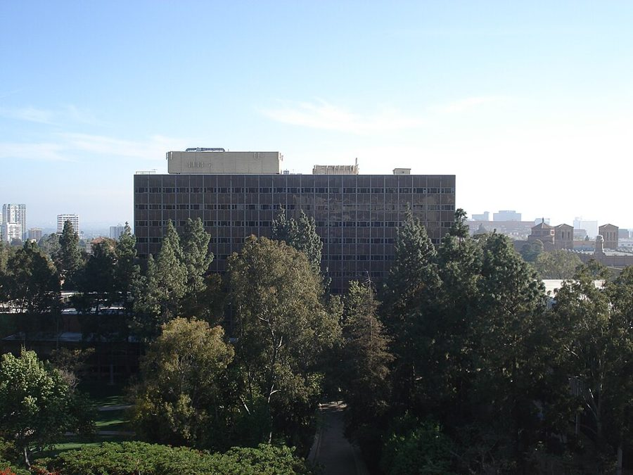
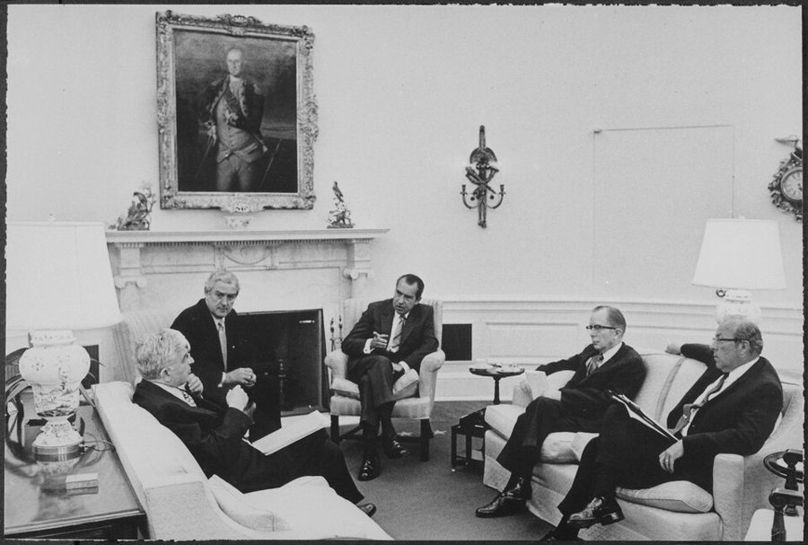
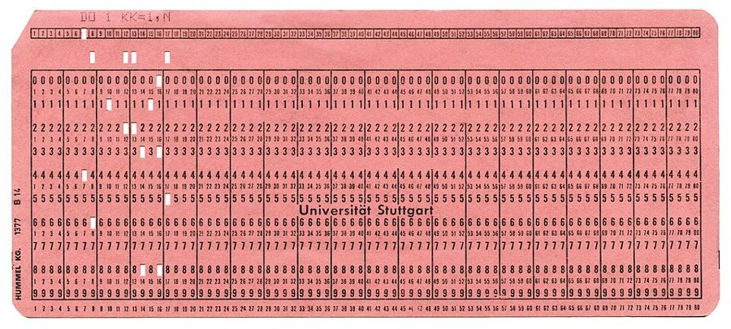
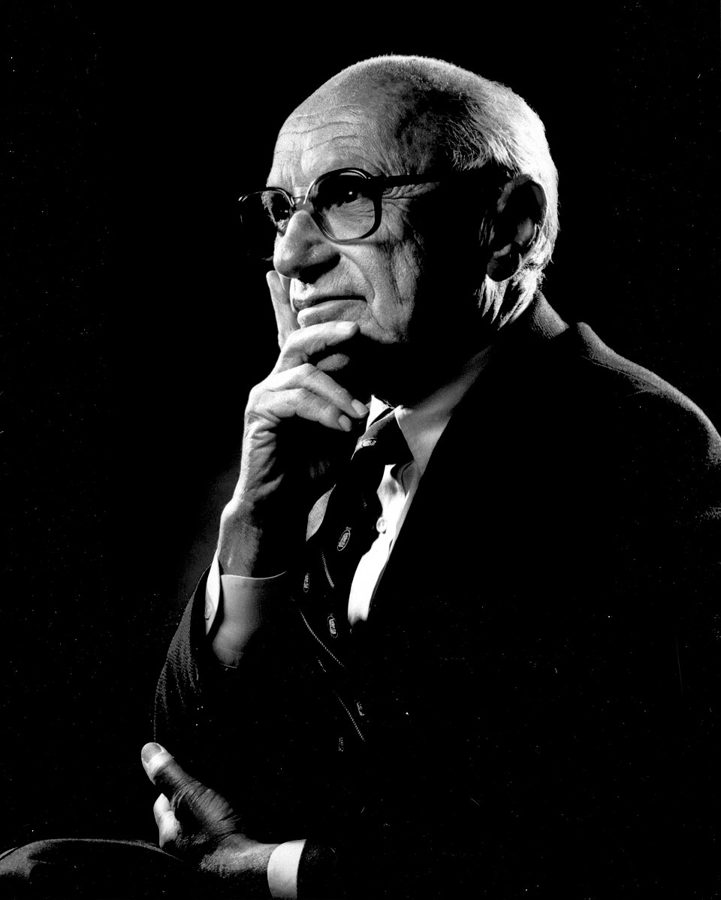
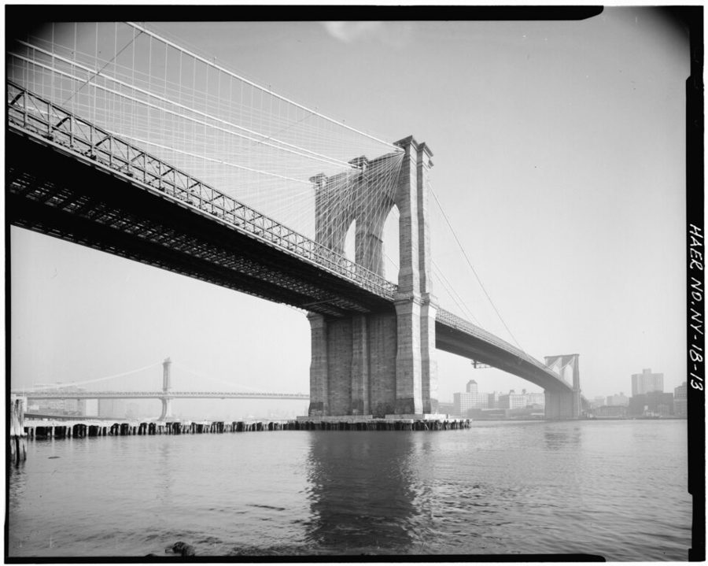

这一页在做什么
这一页从他读硕士时决定接着读博士写起，写到 1969 年秋他去 Cal State 当全职教员为止，那时论文还欠着。几件事：课上和 Alchian 的几回过招；1968 年秋的理论资格考挂科，补课后考过；从投票给约翰逊、相信提高最低工资能帮穷人，转到另一边。读的时候抓两条线：教授们怎么对待班上唯一的美国黑人学生；他自己又怎么解读这种对待。

UCLA 的 Bunche Hall，1964 年建成的社会科学大楼，学生因为它一格一格的窗户叫它「华夫饼」；1969 年以校友 Ralph Bunche 的名字命名。今天经济系就在这栋楼里。书里没写作者当年在哪栋楼上课。照片摄于 2008 年。Alton，CC BY 3.0，维基共享资源 读之前：这一页在他一生的哪里
上一页停在 1967 年前后：他拿到 UCLA 的经济学硕士，辞了县缓刑局的差事，在 UCLA 当研究助理，在洛杉矶城市学院兼一门夜课。这一页回到读硕士的那几年，从他决定读博士说起。这几年是美国大学最不平静的时候：学生上街反越战，黑人学生要求开黑人研究课、多聘黑人教员；1968 年 4 月马丁·路德·金遇刺。
读的时候带着这几个问题。不用先找答案，读完回来对照「检查一下理解」。
Alchian 总爱拿「我打赌你不知道……」来考他。这个教授为什么喜欢他？他又凭什么不怕这个教授？§6
资格考挂科，他事后反倒说是好事。他的理由是什么？你觉得站得住吗？§6
他从赞成提高最低工资转到反对，是一句什么话让他转的？书里讲了最低工资为什么会伤人吗？§6
分节地图
这一页是原书第 4 章的最后一节。粗体是这一节的地标；斜体是英文这一节开头的几个词，在 Kindle 里搜它就能跳到那里，错字照电子书原样。读完打个勾。
UCLA 读博：Alchian、资格考、转向约 3000 词 I liked graduate school at … 第 53–66 段是和 Alchian 过招，第 67 段起考试，第 79 段转向。
出场的人
按出场顺序。书里的家人、老师和同学只写书里说的；公众人物写生卒年。
Jack Hirshleifer 1925–2005，UCLA 经济学家，公众人物 书里拼作 Hirschleifer。上一页出过场：他是系里的研究生顾问（graduate advisor），开学前看了作者的成绩单，说他是该心虚。第 49 段：讲理论课的三位教授之一；第 59 段作者在课上顶撞过他；挂科后陪作者读文章的也有他（第 68 段）。
Armen Alchian 1914–2013，UCLA 经济学家，公众人物 产权经济学的开创者之一，在 UCLA 教了近四十年。上一页出过场。这一页第 52 段起：教研究生第一门微观课，爱拿「我打赌你不知道」考作者，别的学生常被他隔着门打发走，作者敲门，他会请作者进去。
Axel Leijonhufvud 1933–2022，瑞典出生的 UCLA 经济学家，公众人物 第 49 段起。挂科后告诉作者他的卷子是最差的之一，但相信他能做得更好；逐周陪他读文章，请他们夫妇到家里吃饭，后来进了他的论文委员会（第 68–71 段）。
Kenny Washington UCLA 篮球队员，公众人物 第 51 段：送作者达西基衫、贝雷帽和虎牙项链的朋友。书里说他是 1966 年 NCAA 冠军队的明星；UCLA 夺冠是 1964、1965 两年，他两次都在队里，1966 年的冠军是另一所学校。
Arlene Alchian Alchian 的女儿 第 57 段：和作者同班，一起喝咖啡、一起学习；是她告诉作者，父亲喜欢他在班上，因为他不把父亲当「经济学之神」。第 65 段被父亲拿来捉弄作者。
Pops 作者的继父，前几页出过场 第 58 段：作者说自己从不觉得谁比自己高一等，这也许来自继父常说的一句粗话（见词条）。
Arthur Burns 1904–1987，经济学家，公众人物 第 64 段：系里年度招待会的贵宾，书里称他联储理事会主席。他 1970 年 2 月才上任，见「背景」。
Connie 作者的妻子 第 65–66 段：在招待会上被 Alchian 一番话弄得很不痛快，作者事后解释了半天。第 85–86 段：在好莱坞一家海报店工作，夫妻俩主要靠她的工资过日子。
Larry Kimball UCLA 的计量经济学老师 第 75 段：一晚接一晚帮作者弄一个要做统计分析的课堂项目。
John Norby Cal State 经济系主任 第 76 段：系里投票，只要作者考过博士笔试和口试，就给他终身轨的职位；第 82 段免了他委员会的差事，好让他写论文。
Yale Brozen 1917–1998，芝加哥大学经济学家，公众人物 第 79 段：那位教授让作者去读的，就是他和别人讲最低工资伤害低技能工人就业的研究。他 1962、1969 年在《法与经济学杂志》上发过这方面的文章。
背景：作者默认你知道的事
按在书里出现的顺序排，标题前是节号。这里只讲事情本身，作者怎么看放在后面几节。
§6 美国的经济学博士：一道道关美国的博士项目一般先上两年左右的课，再考资格考（这一页叫 theory examination），考过了才能写论文。第 49 段作者自己列了 UCLA 当时的关：理论笔试、三门「领域」笔试、一场口试（四位系里的教授加一位系外的），然后写论文，由论文委员会审。考不过的人要和教授面谈，决定还能不能留下（第 68 段）。考完所有考试、只差论文的人，美国人戏称 ABD（all but dissertation）。1969 年秋他去 Cal State 时就是这个状态。
读硕士时决定读博
第 48 段
补三位教授的理论课
第 49 段
1968 年秋理论笔试
16 人考，14 人没过
读文章，和教授讨论
第 68–70 段
下一学期全部考过
理论、三门领域、口试
第 72 段
1969 年秋 Cal State
全职教三门课
论文还没写，第 76 段
本站示意图：书里的读博路线。「下一学期」书里没给年份，按 1968 年秋往后推，是 1969 年春。 §6 六十年代末的校园：黑豹党、达西基衫、libertarian黑豹党（Black Panther Party）1966 年 10 月在加州奥克兰成立，起初带枪上街巡逻、监视警察，成员以黑色贝雷帽和黑皮夹克出名。达西基（dashiki）是西非式的宽松套头衫，花色鲜艳，那几年成了美国黑人认同非洲根源的打扮。作者戴贝雷帽、穿达西基，所以有同学猜他是黑豹党（第 51 段）。同一段他说，不少同学把他看成激进派，这话大概没错，只是「不是 liberal，是 libertarian 那种」：在美国，liberal 指偏左、主张政府多管的自由派；libertarian 是自由意志派，主张个人自由、自由市场、政府越小越好。两个词中文都容易译成「自由」，意思几乎相反。
§6 Arthur Burns 和联储
1971 年 5 月，尼克松（中）在白宫和几位官员谈话。档案说明列出的在场者有 Arthur Burns、John Connally、Paul McCracken、George Shultz，没写谁坐在哪里。Oliver F. Atkins，公有领域，维基共享资源 联邦储备系统（Federal Reserve）是美国的中央银行，理事会主席管利率和货币，是全国最有权势的经济官员之一。Burns 是研究经济周期的经济学家，1969 年任尼克松的总统顾问，1970 年 2 月起任联储主席，到 1978 年。第 64 段没写招待会是哪一年，只说是糖果便条之后几个月。作者 1969 年秋已去 Cal State 教书（博士还没读完），如果招待会在 1970 年以前，Burns 当时还不是联储主席，书里用的是他后来的头衔。
§6 打孔卡和计算中心
七十年代初德国斯图加特大学用的 80 列打孔卡，顶上一行是这张卡打进去的 Fortran 语句。和本书无关，作者当年用的是同一种格式的卡。Harke，CC BY-SA 3.0，维基共享资源 六十年代多数学生用不上终端。程序和数据要先在打孔机（keypunch）上一张卡一行地打出来，整叠卡交到计算中心排队，大型机跑完再把打印纸放进你的信箱，常常要等到第二天。第 75 段说的就是这个：信箱里只有一张薄纸，是程序出错被退回来了；一大叠，说明至少跑通了。打错一个孔，整个作业白等一轮，所以 Kimball 一晚接一晚地陪他。
§6 Cal State 的教职和黑人学生会作者读本科的学校当时叫 California State College at Los Angeles，1972 年才改名 California State University, Los Angeles（今天简称 Cal State LA）。终身轨（tenure-track）助理教授是有望拿终身教职的正式教员，一般要干五六年、过一次考核。黑人学生会（Black Student Union）六十年代末在加州各校纷纷成立，要求开设黑人研究课程、多招黑人学生和教员；1968–69 年旧金山州立学院的学生罢课最出名。第 83 段黑人学生会请他去开会，就是这个背景：他是学校里很少的几位黑人教员之一。
§6 1964 年大选1964 年总统选举，在任的民主党总统约翰逊（Lyndon Johnson）对共和党的戈德华特（Barry Goldwater）。戈德华特是小政府保守派的旗手，在参议院投票反对了这一年的《民权法案》；约翰逊主打「伟大社会」，扩大联邦政府的福利和民权项目。约翰逊拿了约 61% 的选票，赢了 44 个州加华盛顿特区，是美国历史上最一边倒的大选之一。第 79 段作者说，那时他像多数年轻人一样偏左，投了约翰逊。
§6 他点名的四位思想家
弗里德曼的肖像。The Friedman Foundation for Educational Choice，CC0，维基共享资源 第 80 段的四个人都是自由市场一派的代表。Bastiat（巴师夏，1801–1850）是法国经济学家，以讽刺保护关税的文章出名。Mises（米塞斯，1881–1973）和 Hayek（哈耶克，1899–1992）是奥地利学派，Hayek 1944 年出版《通往奴役之路》，1974 年获诺贝尔经济学奖。弗里德曼（Milton Friedman，1912–2006）是芝加哥大学教授，1962 年出版《资本主义与自由》，1976 年获诺贝尔经济学奖。书里的 Frederick Bastiat，通常写作 Frédéric。
先用中文过一遍：这一页的经济学
作者讲到经济学的地方，这里先从书外把道理讲一遍：它是什么、经济学一般怎么分析。它在这一页起什么作用，看每块最后一句。讲过的概念都汇总在经济学概念 。
§6 公共品和跨代的公共品 public goods 公共品有两个特点：一个人用不妨碍别人用，也很难不让没付钱的人用。路灯、国防、开源软件都接近这一类。麻烦在于人人想搭便车，等别人出钱，所以经济学常拿它当市场供给不足、要靠政府或集体出面的例子。跨代的更难：一座用一百多年的桥，后代受益，却没法回到过去替它付钱。常见的几种思路：借钱来修，让后代的纳税人还；收过桥费；桥让两岸地价上涨，耐用带来的好处今天就能折成价钱；或者人本来就在乎子孙。这些是书外的思路，不是书里的答案。
在这一页： 第 53–56 段，Alchian 问一代人为什么肯修造福后代的工程。作者答「耐用只是副产品」，被浮桥驳倒；最后 Alchian 说他自己也不知道。

布鲁克林大桥，1883 年通车，连接曼哈顿和布鲁克林，今天还在用。远处是曼哈顿大桥。照片摄于 1979 年，是美国国家公园管理局历史工程记录的一部分。Jet Lowe，公有领域，维基共享资源
Alchian 拿来驳作者的那种桥。这一座是 1945 年 3 月美军工兵在莱茵河上搭的浮桥，说明说是在炮火下 32 小时搭成的，能过卡车。载重大，却没打算用一百年。U.S. Army，公有领域，维基共享资源
§6 需求曲线向下倾斜 downward-sloping demand curve 需求定律：别的条件不变，一样东西越贵，人们要得越少。画在图上，纵轴是价格，横轴是数量，就是一条往右下斜的线。经济物品（economic good）是人想多要、得付出代价才拿得到的东西；坏物品（economic bad）正相反，要倒贴钱别人才肯收下，比如垃圾、噪音。同一样东西对不同的人可以一好一坏：烟对烟民是好物品，对邻座是坏物品。Alchian 的糖果篮里糖都不要钱，可同样不花钱，好糖更划算，等于「相对更便宜」，所以先被拿光。最后这一句是导读的解读，书里只说他拿这个现象证明了两条道理。
在这一页： 第 61–62 段：Alchian 贴出便条，说好糖先被拿走，证明糖是经济物品、需求曲线向下。作者在下面回帖抬杠。
看到的
好糖先被拿光
推断
拿的人想要它
Alchian 的结论
经济物品，需求向下
作者的回帖挑的是这一步
被拿走 ≠ 被吃掉：要是拿去冲进马桶呢？
糖蛀牙，是坏物品（第 62 段，玩笑，他没真冲）
本站示意图：糖果便条之争。作者的回帖是抬杠，但抬到了点子上：要下结论，先查清东西去了哪里。
§6 蛛网模型 cobweb theorem 有些东西从决定生产到上市要隔一段时间，比如庄稼和生猪。假设农民按去年的价格决定今年种多少：去年价高，今年大家多种，收成一多价格就跌；价低了明年少种，价格又涨回来。价格和产量这样来回摆，画出来像一张蛛网。供给对价格的反应比需求弱（图上供给线比需求线陡），摆动越来越小，收敛到均衡；反过来就越摆越大。Ezekiel 1938 年在《经济学季刊》上把这套理论系统整理出来，说明市场不一定自己回到均衡。批评集中在「只看去年价」这个假设：Muth 1961 年提出理性预期，认为生产者不会这么短视。
在这一页： 第 69 段：挂科后补课，Leijonhufvud 陪作者逐周讨论 Ezekiel 的这篇文章。这里只是补课的例子，作者没拿它论证什么。
价格
产量
需求
供给
一年一年地绕
① 去年价高，今年多种
② 收成多，价格跌
③ 价低，明年少种
④ 收成少，价格涨
供给线比需求线陡：
越绕越小，停在交点
本站示意图：收敛的蛛网。竖线是「按去年的价种出来的量，卖出什么价」，横线是「按这个价，明年种多少」。
§6 看效果，不看意图 intentions vs. effects 评价一项政策，不问出发点好不好，问实施以后想帮的人是不是真的过得更好了，有没有伤到别人。经济学特别留意意料之外的后果：Bastiat 1850 年写过《看得见的和看不见的》，说好经济学家要看到政策藏在后面、过一阵才显出来的影响。写代码的人熟悉这种事：修 bug 的补丁出发点再好，也得看它上线后把什么弄坏了。弗里德曼 1975 年在电视访谈里说，按意图而不是结果评判政策，是一大错误。主流经济学家大都同意要看效果；争的是效果到底是什么（要靠数据），以及公平、权利这些价值算不算数。
在这一页： 第 79 段：一位 UCLA 教授（作者说可能是 Alchian）问他在乎提高最低工资的意图还是效果，让他去读 Brozen 等人的研究。道理见最低工资 。
作者的论证，一步一步：挂科为什么是好事
第一次理论考没过，他后来觉得有好处：这说明 UCLA 的教授不在乎他的种族，不合格就挂，和挂别人一样。§6 第 73 段
所以他对自己的学历放了心：不是 UCLA 最聪明的学生，至少是中等。教授们没有对他搞平权行动 。§6 第 73 段
系里本来可以给他开一道「种族的照顾」，把他的不足掩过去，那样更省事也更便宜；教授们却花自己的时间辅导他。§6 第 74 段
他说，如果他因为种族得到过什么特殊待遇，可能就是教授们肯帮他。§6 第 74 段
他自己说是带点挖苦、也许带点愤世嫉俗：庆幸教育在「白人时兴喜欢黑人」之前就受完了，那时老师对他的长处短处评价得更诚实。§6 第 78 段
按种族放宽标准，是帮了黑人学生还是害了他们
主流看法： 美国大学几十年来在录取上考虑种族，支持者如 Bowen 和 Bok（1998）发现受益的黑人学生毕业后普遍过得不错；Sander（2004）等人提出「错配」说，认为被拔高录取的学生排在班级末尾，反受其害，这一说争议很大。2023 年最高法院判决大学录取不得再按种族加分。打分和反馈是另一回事：心理学家 Yeager 等人（2014）的实验发现，批评时讲明高标准、再加一句「我相信你能做到」，对不信任学校的黑人学生帮助尤其大。
作者的看法： 放水省事，诚实的批评和肯花时间辅导才是正派的做法；他靠挂科确认了自己的学位是挣来的（第 73–74、78 段）。
本站的评论： 他说的是打分，不是录取，这一点要分开：在打分上，他的说法和后来「高标准加信任」的研究方向一致，有力。但证据只是他一个人的经历；他也承认 Cal State 聘他可能有种族的因素（第 77 段），可见照顾和实力常常搅在一起，不是非此即彼。
提高最低工资，是不是帮穷人的办法
主流看法： 教科书的基本模型说，价格下限高过市场工资会减少低技能岗位。实证研究分歧很大：Card 和 Krueger（1994）发现新泽西提高最低工资后快餐店就业没有减少；Neumark 和 Wascher 等人的研究多发现青少年就业减少；Cengiz 等人（2019）发现温和的提高几乎没减少低薪岗位。
作者的看法： 年轻时以为提高最低工资是帮穷人、尤其是帮黑人穷人的办法；一位教授让他去读 Brozen 等人讲最低工资对最低技能工人就业有「毁灭性」影响的研究，他的态度从此变了（第 79 段）。这一段只讲他怎么转的，没讲推理。
本站的评论： 「先看效果」这一问是站得住的方法，主流也认。书里只写了教授指他去读 Brozen 等人的研究，没写他读了什么、怎么推理。当年多数研究确实找到了青少年就业的减少；今天的证据多得多，分歧变成了「提多少、在哪里提」：温和的提高损失可能很小，拿「毁灭性」去说今天每一项提议就说重了。
词与短语
你用 Kindle，单个生词长按就能查，这里只收词典帮不上的：每个词都认识、合起来不懂的说法，口语和俚语，那个年代的说法，反话。斜体小字是原句里连续的几个词，错字照电子书原样，搜它就能跳到那里。点「记下」收进词本。
§6 UCLA 读博：Alchian、资格考、转向
settle for
… I would settle for a masters …
退而求其次，将就接受
不是「定居、解决」。他原以为读博士的都是天才，自己拿个硕士就够了。
field exams
… passing the theory exam and three …
（专业）领域考试
原文 field 在引号里，紧跟这几个词之后。field 指经济学的分支领域，如财政学、发展经济学。见「背景」。
to put it mildly
… posed, to put it mildly, an …
往轻里说
意思是实际情况比我说的还严重。
a libertarian-type radical
… not liberal but a libertarian-type radical …
自由意志派那一路的激进分子
liberal 是偏左的自由派，libertarian 是主张小政府的自由意志派，中文都可能译成「自由」，意思几乎相反。见「背景」。
Black Panther
… I might be a Black Panther …
黑豹党成员
见「背景」。
dashikis
… because I wore dashikis, a beret …
达西基衫
西非式的宽松彩色套头衫。见「背景」。
NCAA
… a star on UCLA's NCAA-winning 1966 …
全美大学体育协会
National Collegiate Athletic Association，这里指它每年三月的大学篮球锦标赛。1966 年这个年份书里记错了，见「出场的人」。
take a liking to
… took quite a liking to me …
对……有好感，喜欢上
后面紧跟一句：当时看不出来。
not particularly well organized
… Although not particularly well organized, he …
（说得客气）挺没条理的
往轻里说：下一段就是他上课先在公文包里翻半天讲稿。
fumble through
… he was fumbling through his briefcase …
（手忙脚乱地）翻找
I bet you don't know
… Williams, I bet you don't know …
我敢说你不知道……
bet 是「打赌」，口语里就是「我敢说」。Alchian 的激将法。
What's in it for them
… What's in it for them to …
他们图什么，对他们有什么好处
经济学家最爱问的一句：做这件事的人自己得到什么。
shoot down
… shot down what each of them said …
驳倒，否决
本义「击落」。第 55 段又用了一次：作者的答案也被打下来了。
not give a hoot about
… didn't give a hoot about the welfare …
一点也不在乎
hoot 是猫头鹰的叫声，引申为一丁点。口语，和 not give a damn 同义但不粗。
unintended by-product
… durability as an unintended by-product …
无意中带出来的副产品
作者的答案：桥要承重，就不得不结实，耐用是顺带的。
pontoon bridges
… the military builds pontoon bridges that …
浮桥
用浮箱或船拼起来的临时桥。见「经济学」一节的照片。
God of economics
… I didn't see him as the …
经济学之神
原文在引号里，紧跟这几个词之后。同学们对 Alchian 的敬畏。
regard someone as my better
… never regarded anyone as my better …
把某人看得比自己高一等
better 作名词，指地位或本事比你高的人，常用复数 one's betters。
Every man stands up to piss
… Every man stands up to piss …
男人都得站着撒尿
继父的粗话，意思是谁都是普通人，头衔身份都是后面的事。piss 是粗口。
slam dunk
… I could slam dunk a basketball …
扣篮
玩笑式的对比：教授经济学比我懂，可我会扣篮他不会，所以我不怕他。
in awe of
… My fellow students were in awe of …
对……又敬又怕
I favored discrimination
… no, I favored discrimination …
我赞成歧视
不是为种族歧视辩护。discriminate 本义是「区分、挑选」，他拿本义堵 Alchian 的套话：人人每天都在挑。经济学里歧视有什么代价，见
市场让歧视有代价 。
I practiced it a lot when I was dating
… I practiced it a lot when …
我约会的时候可没少挑
玩笑：挑约会对象时看肤色，也是「种族歧视」。接着上一条的本义说。
needle
… Alchian loved to needle people …
逗弄，刺激，故意挑衅
needle 作动词，像针一样扎人。这一页反复出现，两个人都爱这么干。
rascal
… Williams, you're a rascal …
滑头，鬼机灵
本义「流氓、无赖」，熟人之间笑着说是亲昵的「你这家伙」。
economic good
… candy is an economic good …
经济物品
见「经济学」一节。
downward-sloping demand curve
… there's a downward-sloping demand curve for …
向下倾斜的需求曲线
见「经济学」一节。
disposition
… checked out the disposition of the candy …
（东西的）去向、处置
不是「性情」。check out 在这里是「查清」。
economic bad
… and is therefore an economic bad …
坏物品
bad 作名词，和 good 相对。见「经济学」一节。
handiwork
… I signed my name to my handiwork …
（自己的）杰作
本义手工活，常带自嘲或反讽：指那张抬杠的回帖。
ribbing
… a bit of ribbing from his colleagues …
（善意的）取笑
rib 是肋骨，rib someone 本是捅人肋下逗他。
chairman of the board of governors of the Federal Reserve Bank
… chairman of the board of governors …
联邦储备理事会主席
正式名称是 Federal Reserve System 的理事会，不是一家叫 Federal Reserve Bank 的银行。见「背景」。
in mock surprise
… stood back in mock surprise …
装作吃惊
mock 作形容词是「假装的」。
you don't act like a married man
… you don't act like a married man …
你可不像个结了婚的人
当着他妻子的面暗示他在外面不老实。作者说这是在报糖果那张回帖的仇。
in her best interest
… It might be in her best interest …
对她有好处
表面是好心提醒，实际是挑拨：建议 Connie 哪天来系里看看到底怎么回事。
get even
… Alchian's way of getting even for …
扳回来，报复一下
a shock laid in store me
… But a shock laid in store me …
一个打击正等着我
通常说 lay in store for me（在前面等着我），这里少了 for，原书大概就这么印的。
post-mortem
… In the examination's post-mortem, flunking …
事后复盘
本义「尸检」。程序员熟悉：事故之后的 postmortem 复盘会。
en route to
… performances en route to a decision …
作为……之前的一步
法语借词，本义「在去……的路上」。
have it in me
… thought that I had it in me …
有这个能耐
it 指能力、潜力。
The Quarterly Journal of Economics
… in The Quarterly Journal of Economics …
（期刊）《经济学季刊》
哈佛大学主办的老牌经济学期刊。后面引号里的 The Cobweb Theorem 是文章题目，见「经济学」一节。
soul food
… San Fernando Valley for some Swedish …
家乡菜
原文在引号里，紧跟这几个词之后。soul food 本指美国南方黑人的传统饭菜，「瑞典的 soul food」是玩笑：瑞典人 Leijonhufvud 的家乡菜。
dress someone down
… his having dressed me down earlier …
狠狠训斥
不是「给某人穿衣服」。
Reconstruction of Economics
… particularly Reconstruction of Economics and Image …
（书）《经济学的重建》
Boulding 1950 年的书。后面的 Image: Knowledge in Life and Society 是他 1956 年的书，正式书名前面有 The，中文常译《形象》。
in his capacity as
… in his capacity as a member …
以……的身份
capacity 在这里是「身份、职位」，不是「容量」。
The sum of all that
… The sum of all that: when …
总之，结果是
make the grade
… anyone else who didn't make the grade …
达到要求，合格
practice affirmative action with me
… weren't practicing affirmative action with me …
在我身上搞平权照顾
是夸教授，不是抱怨：他们没因为他是黑人就放他过关。
paper over
… paper over those deficiencies by making …
掩盖，糊弄过去
像拿纸糊住墙上的裂缝。
racial allowance
… those deficiencies by making a …
因为种族给的宽限、照顾分
原文在引号里，紧跟这几个词之后。allowance 是「额度、宽限」。
a fat set of printout sheets
… A fat set of printout sheets was …
厚厚一叠打印纸
厚是好事：说明程序跑完了；薄薄一张就是报错退回。
tenure-track assistant professorship
… tenure-track assistant professorship if I …
终身轨助理教授的职位
见「背景」。
in earnest
… delay starting it in earnest for …
认真地、正式地
他头一年忙着适应教书，论文拖了将近一年才真正动笔。
figure in
… might have also figured in …
起了作用，算在里面
figure 在这里是动词「占一份、起作用」。他承认聘用自己可能有种族的因素。
a twinge of
… with a twinge of liberalness on …
一丝，有那么一点
twinge 本义一阵刺痛。在种族问题上他那时还带点左派的味道。
sarcastically, perhaps cynically
… Sometimes I sarcastically, perhaps cynically, say …
带点挖苦，也许还带点愤世嫉俗
他先打了招呼：后面那句话不能照字面读。
before it became fashionable for white people to like black people
… before it became fashionable for white …
在白人时兴喜欢黑人之前
反话。挖苦的不是喜欢，是「时兴」：出于时髦或愧疚而对黑人客气，不敢说真话。下一句他自己解释了。
liberal side of the political spectrum
… toward the liberal side of the political …
政治光谱上偏左的一边
美国的 liberal 指偏左的自由派，不是「自由主义」的泛称。
minimally skilled workers
… opportunities for minimally skilled workers …
技能最低的工人
think with my brain instead of my heart
… think with my brain instead of …
用脑子想，不是凭心肠想
意思是看推理和证据，不凭同情和好意下结论，和第 79 段「意图还是效果」是一回事。
proselytizing
… my class for proselytizing students …
（向学生）传教，拉人入伙
本指劝人改信宗教，这里指在课上推销自己的政治立场。
academic dishonesty
… I think that's academic dishonesty …
学术上的不诚实
通常指抄袭作弊。他用来说教授利用讲台推销立场，用法比平常宽。
spare someone something
… Norby spared me committee assignments …
免了某人（某件差事）
spare 在这里是「免除」，不是「多余的」。
ego is involved
… For one thing, ego is involved …
面子在里面
ego 在口语里常指自尊、面子。
Black Student Union
… meetings of the Black Student Union …
黑人学生会
后面的 BSU 是它的缩写。见「背景」。
land a job
… Connie landed a new job at …
找到（一份工作）
land 作动词，像钓上一条鱼，带点「好不容易弄到手」的意味。
gig
… offered a singing gig with a …
（乐手、歌手的）演出差事
The Blossoms 是六十年代洛杉矶的女子演唱组合。
bank
… Connie's paycheck, while banking mine …
存起来
bank 作动词。
down the road
… great financial shape down the road-when …
往后，将来
读不通的扫描错字：
… had to be a geniusand since … 应为 genius—and，破折号丢了，两个词粘在一起。… effort where necessary to succeed … where 应为 were。… about my the a the confrontations … 中间几个词是乱码，意思是 my confrontations。… The turbulent '6os might have … 应为 '60s。… (it might have Armen Alchian) … 漏了一个 been：可能是 Armen Alchian。
和 Sowell 的书对照
Sowell 的自传 A Personal Odyssey 和书信集 A Man of Letters 本站都有导读。同一件事两边都写过的，摆在一起；说法不一样的并排列出，不判谁对。老站页面没有能直接跳到的锚点，链接到页，正文里写明在哪一节。
1969 年夏天，他是什么身份
这本书 1968 年秋理论考没过，下一学期理论考、三门领域考和口试都过了；1969 年秋起在 Cal State 全职教三门课，论文还没动笔（第 72、76 段）。两人在 UCLA 见面写在下一章（05a 页）。
Odyssey 第 9 章第 1 节：1969 年夏 Sowell 在 UCLA，一个高个子黑人找上门，说听说两人看法相近，自报姓名 Walter Williams。Sowell 写他当时是在读经济学博士的研究生；后来媒体说他是自己的学生或门徒，「两样都不是」。Odyssey 导读 09a，第 1 节 →
Letters 1970 年那几封信前面的串场：Walter 那时一边在本地一所学院教书，一边在 UCLA 读完博士。Letters 导读 02a →
赶在「照顾」之前受的教育
这本书 挂科让他相信教授们没有因为种族放水；他庆幸几乎全部教育都在「白人时兴喜欢黑人」之前受完，老师会直说「这是胡说」（第 73–74、78 段）。
Odyssey 第 12 章第 1 节：Sowell 说自己的学术生涯起步于 1964 年民权法案之前两年，拿终身教职比平权政策的「目标与时间表」早一年；他赶上的正好是旧歧视最坏的时候已过、种族配额让黑人的成就显得可疑之前，这是运气。Odyssey 导读 12 →
Letters 2002 年 10 月 6 日给外甥女 Ruthellen 的信：哈佛第一学期，室友 Norton 一句「你什么时候才不混日子」救了他；今天处境相同的黑人学生，多半听不到这样的话。Letters 导读 05a →
从赞成最低工资到反对（不是同一件事）
这本书 年轻时以为提高最低工资能帮穷人，1964 年投了约翰逊；一位 UCLA 教授问他在乎意图还是效果，让他去读 Brozen 等人的研究（第 79 段）。
Odyssey 第 5 章第 24 节：1960 年夏 Sowell 在劳工部研究波多黎各的制糖业，那时赞成最低工资，却看到工资一抬、就业就降；他想找数据分清是最低工资还是飓风造成的，申请递上去再没回音。Odyssey 导读 05b → 第 6 章第 30 节：1964 年他一度想把博士论文改写最低工资对波多黎各失业的影响。Odyssey 导读 06b →
Letters 1984 年的一段串场：他原本相信最低工资法，多年来被越来越多的证据说服了。Letters 导读 03c →
两边不一样： 这是两个人各自的转变，不是同一件事。Williams 是被教授一句话点醒，去读别人的研究；Sowell 是自己在劳工部做研究时撞上的。
值得停下来的句子
whether I most cared about the intentions behind a higher minimum wage or its effects.— §6 第 79 段。本站译：（那位教授问我，）我最在乎的，是提高最低工资背后的意图，还是它的效果。
这是全书立场转变的那一刻，可作者写得很轻：教授是谁他都记不准（it might have Armen Alchian）。关键词是 most：不是问他在不在乎效果，而是逼他排个先后。后面几章他讲最低工资、执照、平权，用的都是这把尺子。
I'm glad that I received virtually all of my education before it became fashionable for white people to like black people.— §6 第 78 段。本站译：我庆幸自己几乎全部的教育，都在白人时兴喜欢黑人之前就受完了。
他自己先说了这是 sarcastically, perhaps cynically 说的。挖苦落在 fashionable 上：讨厌的不是白人对黑人好，是出于时髦而来的客气，客气到不敢说真话。第 7 章他会把这句话再说一遍。
检查一下理解
先在心里答，再点开。答错的那题，回书里把对应那一节再读一遍。
1.（§6）布鲁克林大桥那道题，作者的答案是什么？Alchian 怎么驳倒的？最后的答案又是什么？ 作者说当代人不在乎后代，桥要承重就不得不结实，耐用是副产品。Alchian 举军队的浮桥：载重很大，却不耐用。几周后学生请他公布答案，他说自己也不知道，只是想看看有没有人知道。
2.（§6）作者回答「我赞成歧视」，是在为种族歧视辩护吗？ 不是。Alchian 想套他的话，他把 discrimination 还原成「挑选」的本义：他约会时就没少挑。Alchian 笑着说他是个滑头，从此不再拿这招对付他。
3.（§6）糖果便条之争：Alchian 想证明什么？作者的回帖挑的是哪一步？ Alchian 说好糖先被拿走，证明糖是经济物品、需求曲线向下。作者回帖说是他把糖拿去冲了，因为糖蛀牙、是坏物品：拿走不等于想要，先查清去向再下结论。他其实没冲，只是逗 Alchian。
4.（§6）资格考挂科以后发生了什么？作者为什么事后说是好事？ 他和 Leijonhufvud 面谈，被告知卷子是最差的之一，但教授们相信他能做好，于是让他读文章、和教授讨论，下一学期全部考过。他说挂科证明教授们不看种族、没给他放水，他的学位是挣来的。
5.（§6）Cal State 为什么聘他？他自己怎么猜？ 系里投票，只要他考过博士笔试和口试就给他终身轨职位。他猜一是因为当学生时留下的印象和交情，还有和 Kirsch 的关系；二是动荡的六十年代，系里也许想要、或觉得需要一位黑人教员。
6.（§6）他说自己从不在课堂上传教，那他怎么让学生认同自由和市场？ 他认为在课上推销立场是学术上的不诚实。他的办法是教给学生严谨、冷静地思考的工具，相信学生用这些工具会自己走到他的结论。
用一句话说这一页，写给一个没读过的人。
读完想一想
想一想：「你在乎的是意图还是效果？」这一问让他改了立场。拿它去看一项你熟悉的、出发点很好的政策，会得出什么？
几种看法 作者和弗里德曼的看法：好心的政策常常伤到想帮的人，要按效果评判。经济学家 David Card 的研究提醒另一面：效果本身要靠数据去量，量出来常常和理论预想的不一样。哲学上还有一种看法：效果之外，意图和公平本身也有分量。
想一想：他宁可挂科也不要种族上的照顾，又承认自己在 Cal State 的教职可能沾了种族的光。一个人能不能既受益于、又反对某种照顾？
几种看法 作者的看法：照顾会让人怀疑黑人的成绩是不是挣来的，他宁要诚实的评价（第 73–78 段）。Sowell 也说自己幸运，赶在配额之前。支持平权的一方，如 Bowen 和 Bok，认为照顾打开了本来关着的门，受益者后来做得很好。还有人会说：受过益再反对，正说明他看到了代价。
想一想：他说不在课上推销立场，只教思考的工具，可他的目的就是让学生认同自由市场。这算不算另一种传教？
几种看法 作者的看法：给学生工具、让他们自己得出结论，和直接灌输立场不一样（第 81 段）。社会学家韦伯（Max Weber）一百年前就主张教授不该在讲台上宣传政治立场。另一种看法：选哪些模型、哪些例子来教，本身就带着立场；Frank 等人 1993 年的研究还发现，学经济学的学生在合作游戏里更少合作。
精彩回顾
读过又忘了，从这里想起来。挑的是这一页最值得记住的人、场面和说法，不按原书顺序；每条后面是节号，想细看就回书里那一节。全书各页的这一节都收在全书回顾 。
一句话： 在 UCLA，他挂过一次科，碰上一群肯说真话、也肯花时间的教授，从此改用「看效果」的尺子量政策。
布鲁克林大桥，没有答案 Alchian 问一代人为什么肯修造福后代的桥，驳倒了所有学生，包括作者的「耐用是副产品」。几周后他说：我也不知道，就是想看看你们知不知道。
§6 「我赞成歧视」 Alchian 想套他的话，他说赞成，约会时没少挑。Alchian 笑骂他是个滑头，从此不再用这招。
§6 冲进马桶的糖 Alchian 贴便条说好糖先没，证明需求曲线向下；作者回帖说糖蛀牙、是他拿去冲了。几个月后，Alchian 当着 Connie 的面暗示他和自己女儿走得太近。作者认定，这是在报那张回帖的仇。
§6 十六个人挂了十四个 1968 年秋的理论笔试，他的卷子是最差的之一。教授们没让他走，陪他一篇篇读文章，下一学期全部考过。他说这证明没人给他放水。
§6 意图还是效果 1964 年投了约翰逊、相信最低工资帮穷人的他，被一位教授（也许是 Alchian）问住了：你在乎的是意图还是效果？
§6